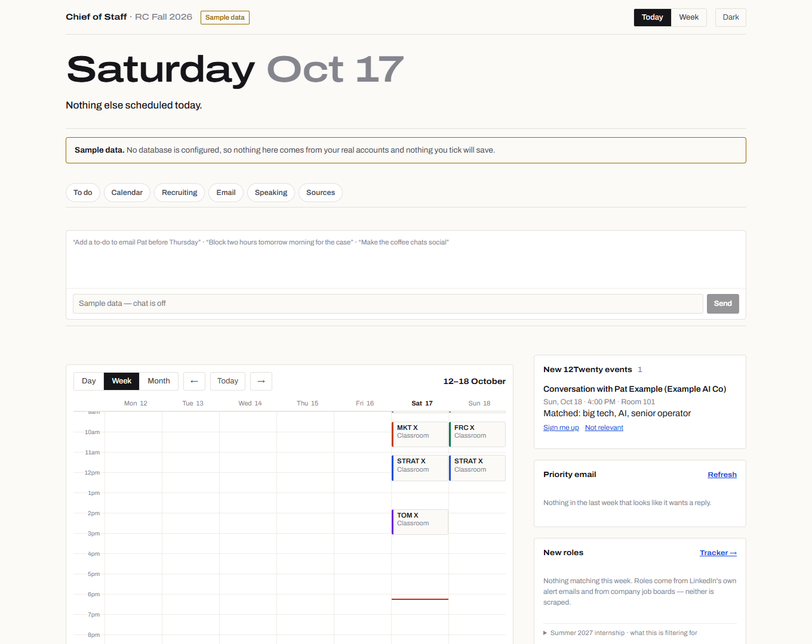

A product I built at Harvard Business School
An AI chief of staff for business school.
One page that runs my day: classes, every Canvas deadline, recruiting and email, with an agent that handles the routine work and never acts on anything I can't undo without my say-so. Then I turned it into a template any HBS student can set up.

The problem: the admin is spread across five systems
An HBS first year runs six courses with a case almost every day, while recruiting for a summer internship. The information needed to plan a single day lives in five places, none of which talk to each other, and two of which sit behind university single sign-on with no API a student can use.
What it does
Every source flows into one page I check from my phone between classes.
Plans the day
A day, week and month calendar merged from Outlook and Google, and a single to-do list holding every Canvas assignment, grouped by the day it's due.
Runs recruiting
New 12Twenty events matched to my targets, roles from company job boards and LinkedIn alerts, an internship tracker, and contacts worth reaching out to.
Triages email
Mail that wants a reply from both inboxes, and a reading list from my newsletters, rebuilt twice a day so it holds still long enough to finish.
Coaches participation
Counts classes since I last spoke in each course and shows a cold-call risk before each class, against my goal of speaking every two or three sessions.
Has an agent
A chat box backed by Claude with tools: add or update a task, block time for a case, move an event, merge duplicates, sign me up for an event. It acts only on what I ask for, one request at a time.
Prepares for class
A daily run after class files what professors posted and writes study notes for tomorrow's cases, which I use to check my own reading.
How it works
The hard constraint was that two sources only exist behind a signed-in browser. So the system is split in two: workers that do the reaching, and a website that only ever reads a database.
Sources
- CanvasREST API
- Google Calendar, GmailOAuth APIs
- HBS Outlooksigned-in browser only
- 12Twentysigned-in browser only
- Job boardspublic APIs
Cloud worker
- GitHub ActionsAPI sources, on a schedule, laptop or not
Laptop worker
- Node + Playwrightbrowser sources, plus approved actions
Database
- Neon Postgrestasks, events, email, roles, the action queue
Website
- Next.js on Vercelpassword-gated, reads only the database
- Claude agenttool use over the same data
Approvals travel the other way: I tap “Sign me up” on my phone, the website queues it, and the laptop worker, the only machine with a 12Twenty session, carries it out within a minute. University credentials never leave the laptop; the website holds nothing that could impersonate me.
Product decisions
Most of the work was deciding what the system should not do. Each of these came from something that went wrong first.
One scheduled run, not seven
My first version had seven daily automations, and I switched them all off because each one opened a new conversation every day. The fix was one run with one notification. Every new feature now has to fit inside it.
Nothing irreversible without a tap
The system registers me for an event only when I ask for that specific event, and a standing “just sign me up” never carries over. It never sends email: outreach notes are drafted for me to send myself.
Stale data has to announce itself
Every source shows when it last synced, and the page says when the laptop worker is offline. A quiet calendar should mean a quiet day, never a broken sync.
Respect the platforms
No LinkedIn scraping: roles arrive through LinkedIn's own alert emails. 12Twenty is visited gently, because repeated visits trigger a block that lasts more than a day.
A study partner, not a substitute
The case notes quote the assignment, cite every figure and show the arithmetic, so I can check my own reading. They never write anything that gets submitted, and each course's AI policy comes first.
Defaults that can't be mistaken for data loss
The to-do list once defaulted to “through the next class day” and hid ninety of a hundred assignments, which looked like Canvas had stopped syncing. It now defaults to a week and says how many items are further out.
From one user to a section
To share it with classmates, I separated the system from my data. The public template is a scrubbed copy with fresh history: every personal detail moved into one settings file, example data in its place, and setup docs written for someone who has never used a terminal.
Path 1 · about 15 minutes
No code, inside Claude
A page that runs on each student's own Claude account and reads their Google Calendar and Gmail. Canvas and Outlook arrive as calendar feeds.
Path 2 · two to three hours
Build your own, guided
Copy the template and build the full console in Claude Code, step by step: your own website, database, laptop worker and agent. A first coding project with a useful result.